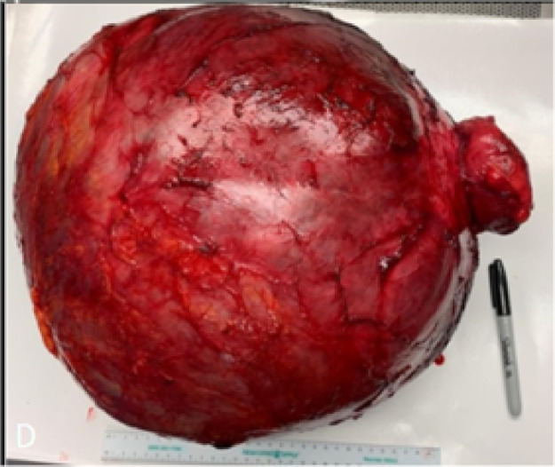
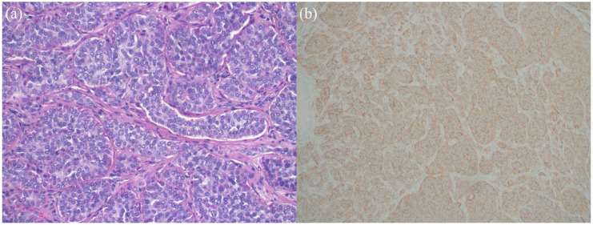
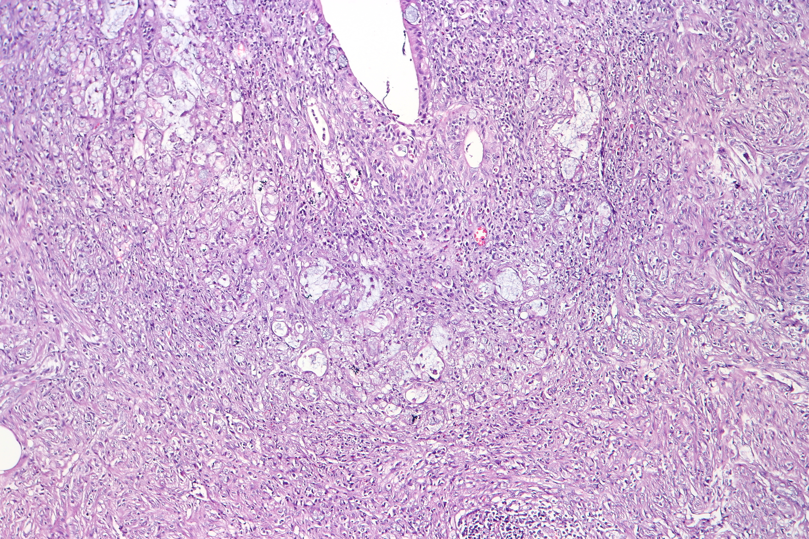
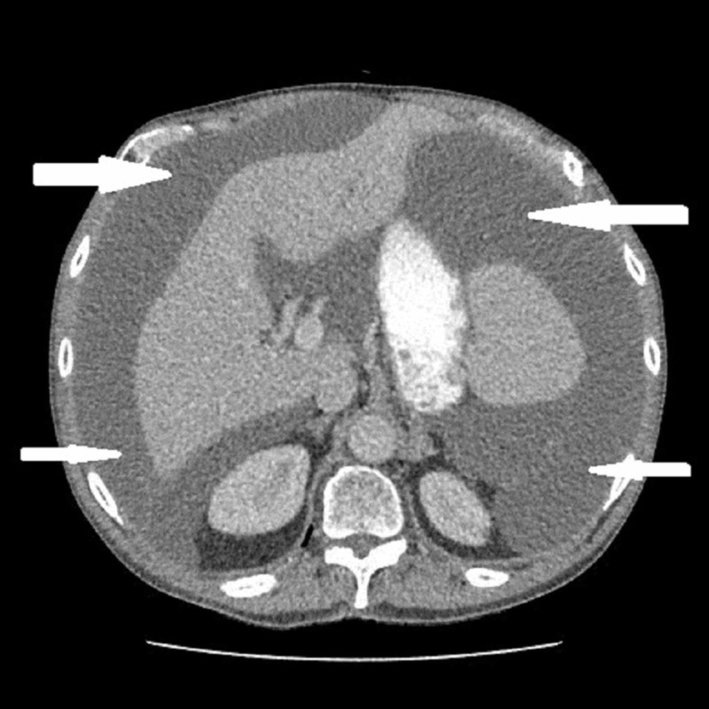
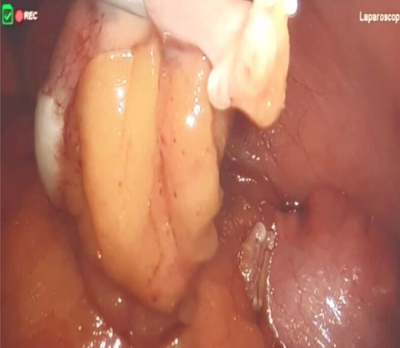
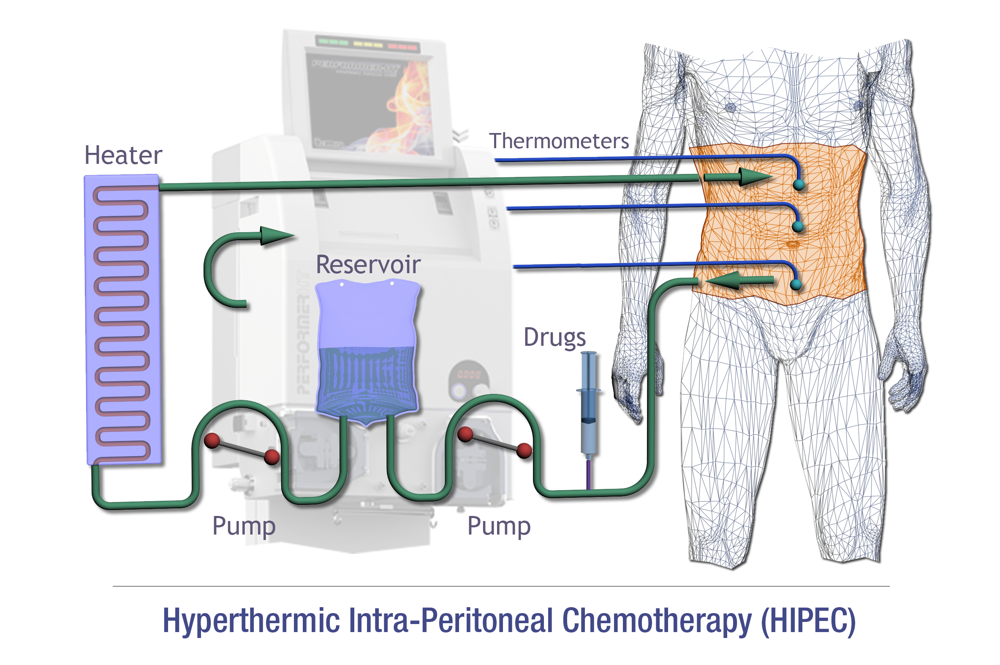
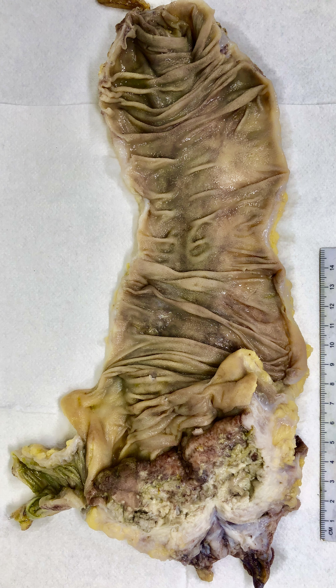
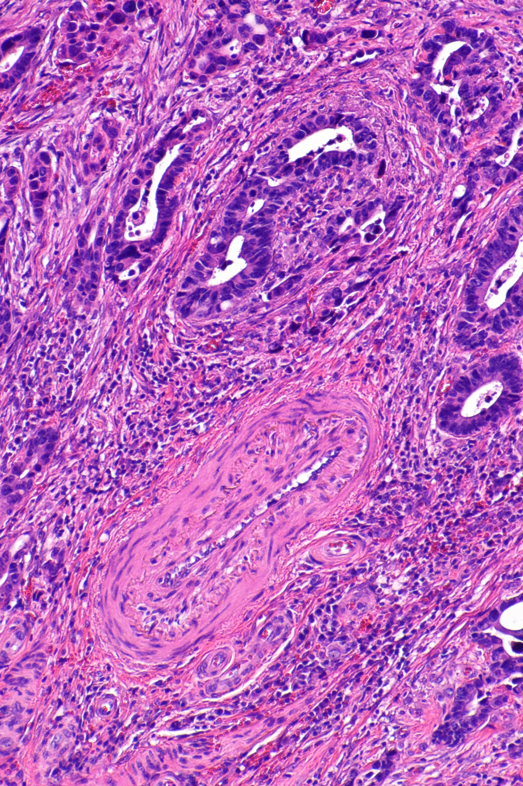

incidentalcomo o diagnóstico chegao difícil é tratar, não diagnosticar
O reducionismo que a banca explora
Tumor de apêndice é tumor carcinoide.
O carcinoide é só um dos personagens. São três tumores — e a prova vive de trocar o nome de cada um para ver se você reconhece a entidade.
Os três tumores de apêndice
Muita gente chega aqui achando que tumor de apêndice é sinônimo de tumor carcinoide. Não é. O carcinoide — hoje chamado tumor neuroendócrino — é só um dos personagens. Síndrome carcinoide e tumor carcinoide são um recorte do tema, não o tema inteiro.
São três os tumores que dominam o apêndice, e você precisa carregar os três na ponta da língua: tumor neuroendócrino, adenocarcinoma e tumor mucinoso. Repare que cada um carrega apelidos que aparecem trocados nas provas. O neuroendócrino é o antigo carcinoide — dois nomes, a mesma entidade. O mucinoso aparece como neoplasia mucinosa de apêndice ou simplesmente mucocele de apêndice — três nomes para a mesma coisa. Saber esse vocabulário é o primeiro filtro de uma questão: a banca troca o nome para ver se você reconhece a entidade.
E o adenocarcinoma? Ele tem direito de existir no apêndice por um motivo anatômico simples: o apêndice faz parte do cólon. Sendo um segmento colônico, pode desenvolver adenocarcinoma como qualquer outro pedaço do intestino grosso. Guarde essa ideia — ela vai justificar, lá na frente, por que o adenocarcinoma de apêndice é tratado exatamente como câncer colorretal.
O apêndice e seus três caminhos. O apêndice é um segmento do cólon — daí seus três tumores possíveis. Clique em cada estrutura (mouse, toque ou teclado).
Esquema interativo
Toque numa estrutura do esquema para ver a leitura clínica.
Agora a pegadinha clássica. Existia um debate antigo sobre qual seria o tumor mais comum do apêndice. Esse debate acabou. Hoje, sem discussão, o mais comum é o carcinoide (neuroendócrino). Banca que ainda marca adenocarcinoma como o mais frequente está apoiada em referência desatualizada — e uma questão real, com esse mesmo enunciado, já foi anulada justamente por isso.
Por fim, o recado que organiza o tema inteiro: aqui, o difícil não é diagnosticar, é saber tratar. O diagnóstico quase sempre cai no seu colo como achado incidental, depois de uma apendicectomia por suspeita de apendicite. Diagnosticar sem saber conduzir não resolve nada. Por isso, daqui para a frente, o foco é conduta.

Achado: peça cirúrgica de neoplasia mucinosa de apêndice ressecada. A maioria dos tumores de apêndice é descoberta assim — na peça, depois da cirurgia, não antes.
Peça macroscópica. Lu A, Cho J, Vazmitzel M et al., Radiol Case Rep 2021;16(5):1051–1056, Fig. 3, via PMC (PMC7917446) · CC BY 4.0. Ver fonte.Mapa-mãe dos três tumores. Três entidades, vários nomes. Reconhecer o apelido é o primeiro passo da questão.
Resumo operacional
Três tumores de apêndice — neuroendócrino (mais comum), adenocarcinoma (porque apêndice é cólon) e mucinoso (mucocele). O tema é sobre tratar, não diagnosticar.
Quiz — fixação
Qual é, hoje, o tumor mais comum do apêndice?
Gabarito: C. O debate antigo acabou: o neuroendócrino é o mais frequente.
Por que cair na A: é a resposta de referência desatualizada — exatamente a que já levou banca a anular questão.
"Mucocele de apêndice" e "neoplasia mucinosa de apêndice" são tumores diferentes.
Falso. São apelidos da mesma entidade — o tumor mucinoso.
Atenção: a banca troca o nome de propósito para testar se você reconhece a entidade por trás do apelido.
O apêndice pode desenvolver adenocarcinoma porque é um segmento do…
Gabarito: B. Sendo parte do intestino grosso, o apêndice comporta-se como ele — daí o adenocarcinoma.
Por que cair na A: o apêndice é vermiforme e fino, mas nasce do ceco — é cólon, não delgado.
Página 2 / 8
Síndrome carcinoideMetástase hepáticaSerotonina
?
Por que um tumor que produz substâncias o tempo todo só dá sintomas quando chega ao fígado?
Neuroendócrino e a síndrome carcinoide
O número que define o protagonista
65%dos tumores de apêndice são neuroendócrinos — a entidade mais comum do tema. E o apêndice é a principal localização dos tumores neuroendócrinos do intestino.
O neuroendócrino é o protagonista por frequência. Some à fração de ~65% um número que parece pequeno mas não é: cerca de 0,7% de todos os apêndices retirados — a esmagadora maioria operada por suspeita de apendicite — abriga um carcinoide como achado de histopatologia. Traduzindo: aproximadamente 1 em cada 100 apêndices operados revela um carcinoide incidental. Para um tumor que se chama de "raro", isso é muito.
E é justamente isso que define o NET de apêndice: ele não dá clínica. É achado incidental. O paciente não chega com queixa de carcinoide — chega com dor em fossa ilíaca direita, opera apendicite, e o tumor aparece depois, na peça.
Aqui entra o ponto mais cobrado do tema. A famosa síndrome carcinoide é rara, e só acontece sob uma condição: quando já existe metástase hepática. Para entender por quê, siga a substância. Enquanto o tumor está confinado ao apêndice, tudo que ele produz — 5-HIAA, histamina e companhia — cai na circulação porta e vai direto para o fígado. O fígado metaboliza esses produtos antes que cheguem à circulação sistêmica. Resultado: nenhum sintoma. O fígado funciona como filtro de primeira passagem.
A metástase hepática quebra esse filtro. Instalada dentro do fígado, a lesão lança suas substâncias direto na circulação sistêmica, sem passar pelo clearance. Agora sim aparecem os sintomas. Por isso a regra de ouro: síndrome carcinoide a partir de tumor de apêndice = pense em metástase hepática. Sem metástase hepática, não há síndrome — e essa frase resolve metade das questões sobre o assunto.
O eixo da síndrome carcinoide. A síndrome é uma falha de filtro. Clique em cada estação do eixo.
Esquema interativo
Toque numa estação do eixo para ver a leitura clínica.
Quando a síndrome aparece, o quadro é multissistêmico: flush cutâneo, diarreia (um dos sintomas mais característicos), hepatoesplenomegalia e acometimento cardíaco — tipicamente à direita. Por que à direita? Siga de novo a circulação: o sangue sai do fígado, sobe pela cava e chega primeiro ao coração direito. As câmaras direitas são as primeiras expostas às substâncias liberadas pela metástase, e por isso são as que adoecem. Some ainda a asma, que pode aparecer pela histamina liberada. Tudo se explica pelo mesmo eixo: fígado → coração direito → resto do corpo.
E o prognóstico? Entre os três tumores de apêndice, o neuroendócrino é o de melhor prognóstico. O personagem mais comum também é o mais comportado — o que não significa que possa ser ignorado, porque a conduta cirúrgica ainda exige decisões finas diante dele.

Achado: ninhos sólidos em arranjo organoide e cromatina em "sal e pimenta" — o tumor neuroendócrino do apêndice. É a célula que, com metástase hepática, lança substâncias direto na circulação e adoece o coração direito.
Histologia H&E. Hasan F et al., SAGE Open Med Case Rep 2025;13, Fig. 3a, via PMC (PMC12381439) · CC BY-NC 4.0. Ver fonte.Decisão de uma frase. A pergunta mental obrigatória diante de síndrome carcinoide.
Mnemônico
"Sem fígado tomado, sem síndrome." A síndrome carcinoide exige metástase hepática.
Pegadinha de prova
A questão descreve síndrome carcinoide florida e pergunta o estágio do tumor. Se há síndrome, há metástase hepática — não existe síndrome carcinoide de apêndice "localizado".
Não confunda — qual lado do coração?
Coração direito (correto)
O efluente do fígado chega primeiro às câmaras direitas — são as primeiras expostas e as que adoecem.
Coração esquerdo (poupado)
O pulmão inativa parte das substâncias antes do retorno às câmaras esquerdas, que costumam escapar.
Revisão ativa
Se o fígado é o filtro que protege, o que aconteceria com a síndrome num paciente com função hepática muito comprometida por outra causa?
Por que faz sentido fisiológico que a diarreia e o flush andem juntos nessa síndrome?
Como você explicaria, em uma frase, por que o coração esquerdo costuma escapar?
Resumo operacional
NET = ~65% e o mais comum; achado incidental (~0,7% dos apêndices). Síndrome carcinoide só com metástase hepática (filtro quebrado): flush, diarreia, coração direito, asma (histamina). Melhor prognóstico dos três.
Quiz — fixação
Paciente com tumor neuroendócrino de apêndice confinado, sem metástases. A chance de síndrome carcinoide é:
Gabarito: C. Sem metástase hepática, os produtos são filtrados pelo fígado na primeira passagem.
Por que cair na D: o tamanho importa para a conduta cirúrgica, não para gerar a síndrome.
O acometimento cardíaco da síndrome carcinoide é tipicamente nas câmaras esquerdas.
Falso. É à direita — primeira parada do efluente hepático.
Atenção: o pulmão inativa parte das substâncias antes do retorno às câmaras esquerdas.
A asma da síndrome carcinoide é atribuída à liberação de:
Gabarito: B. A histamina liberada pela lesão metastática explica o broncoespasmo.
Por que cair na A: a serotonina (5-HIAA) explica o flush e a diarreia, mas a asma vem da histamina.
Página 3 / 8
AdenocarcinomaHemicolectomia direitaLinfonodos
Cólon direito
Sangra. Anemia, sangue oculto — uma pista clínica.
×
Cólon esquerdo
Altera o hábito intestinal. Mudança no calibre das fezes — outra pista.
E o apêndice? Silêncio total. Três segmentos do mesmo intestino, três comportamentos — e o silencioso é o mais perigoso.
Adenocarcinoma de apêndice
O adenocarcinoma de apêndice tem uma regra de manejo que cabe em cinco palavras: trate como câncer colorretal. Faz sentido — o apêndice é cólon, e o adenocarcinoma que nasce nele é, na essência, um câncer de cólon. Toda a lógica de tratamento que você já conhece do colorretal se aplica aqui.
Dentro de todo o cólon e reto, porém, o apêndice é o lugar mais difícil de o adenocarcinoma aparecer. É a localização menos provável — por isso sua prevalência é baixa: cerca de 0,4% das apendicectomias. Repare na ancoragem dos dois números que você já viu: carcinoide em torno de 0,7% e adenocarcinoma em torno de 0,4% das apendicectomias. O carcinoide é o mais frequente dos dois — e esse "0,7 > 0,4" é uma forma rápida de não inverter a ordem na prova.
Como os outros, o adenocarcinoma de apêndice também é achado incidental: principalmente nessa localização, ele não dá clínica. E é aqui que mora a diferença que piora o prognóstico. Pense no câncer colorretal comum: o de cólon direito costuma sangrar; o de cólon esquerdo altera o hábito intestinal. Cada um deixa uma pista — sangue oculto, anemia, mudança no calibre das fezes — e quase sempre é flagrado na colonoscopia.
O adenocarcinoma de apêndice escapa de todas essas pistas. Ele não sangra de forma detectável, não muda o hábito, e a colonoscopia tem dificuldade de alcançá-lo. Sobra só o exame de imagem — e muitas vezes ele só aparece quando já cresceu. Esse atraso é o que torna seu prognóstico um pouco pior que o do colorretal típico: não porque a biologia seja muito diferente, mas porque o diagnóstico costuma chegar mais tarde. Mesma doença, janela de detecção mais estreita.
Três segmentos, três comportamentos. Por que o adenocarcinoma de apêndice é o mais traiçoeiro? Clique em cada segmento.
Esquema interativo
Toque num segmento para ver o comportamento clínico.

Achado: células tumorais e ninhos infiltrando a parede do apêndice (H&E). É adenocarcinoma — a mesma assinatura glandular maligna do cólon, por isso o tratamento é o mesmo: hemicolectomia direita oncológica.
Histologia H&E. Por CoRus13, via Wikimedia Commons — "Signet ring cell adenocarcinoma of the appendix" · CC BY-SA 4.0. Ver fonte.
Não confunda — prognóstico pior ≠ biologia pior
O que muda
A janela de diagnóstico: o tumor é pego mais tarde porque não dá pistas (não sangra, não muda hábito, escapa da colonoscopia).
O que não muda
A biologia: é câncer de cólon como qualquer outro. Doença comparável, detecção atrasada — não agressividade extra.
O que diferencia o aluno avançado
O avançado não decora "prognóstico pior"; ele explica por que — ausência de sangramento detectável e de alteração de hábito, somada à dificuldade de alcance colonoscópico, empurra o diagnóstico para fases mais avançadas.
Resumo operacional
Adenocarcinoma de apêndice = trate como câncer colorretal; o mais raro (~0,4%); silencioso → diagnóstico tardio → prognóstico um pouco pior (por detecção, não por biologia).
Quiz — fixação
O prognóstico do adenocarcinoma de apêndice tende a ser um pouco pior que o do colorretal típico principalmente porque:
Gabarito: B. O atraso diagnóstico é o fator — não sangra, não muda hábito, escapa da colonoscopia.
Por que cair na A: é o erro comum de atribuir tudo à biologia, e não à janela de detecção.
O adenocarcinoma é o mais frequente dos três tumores de apêndice.
Falso. É o mais raro (~0,4%); o carcinoide é o mais comum (~0,7%).
Atenção: ancore "0,7 > 0,4" para não inverter a ordem.
O adenocarcinoma de apêndice é tratado como câncer:
Gabarito: B. O apêndice é cólon — o adenocarcinoma segue toda a lógica do colorretal.
Por que cair na D: confunde a entidade com o carcinoide; aqui a histologia é glandular, igual ao cólon.
Página 4 / 8
MucinosoPseudomixoma peritonealNão romper
Mucinoso e o pseudomixoma peritoneal
O tumor mucinoso de apêndice — a mucocele — também é raro. Mas ele compensa a raridade com um perigo específico que precisa virar reflexo na sua cabeça: mucocele de apêndice que estoura pode originar pseudomixoma peritoneal. Esse é o motivo, e o único motivo relevante, pelo qual ela é temida. O mecanismo é direto: a lesão se rompe, a mucina se dissemina pelo peritônio, e essa mucina espalhada se organiza no quadro chamado pseudomixoma peritoneal — a cavidade tomada por material gelatinoso, difícil de tratar e de recidiva teimosa.
Daí a regra de manuseio número um: evitar ao máximo estourar ou romper um tumor mucinoso. Isso muda a forma como você opera. Nada de manobras bruscas, nada de tracionar sem cuidado, nada de puncionar para "ver melhor".
E o princípio não é exclusivo do apêndice. O tumor mucinoso também aparece no ovário, e ali vale exatamente a mesma lei — evitar ao máximo romper a lesão. Isso desmonta um erro clássico de quem está começando: puncionar cistos e tumores de ovário "na loucura", para esvaziar e facilitar a retirada. Se aquele tumor for mucinoso, a punção espalha mucina pelo peritônio e causa pseudomixoma. Então fica a regra firme: diante de um tumor mucinoso, onde quer que esteja, nunca furar deliberadamente. A pressa de esvaziar pode custar uma carcinomatose mucinosa que vai perseguir o paciente por anos.
Íntegra protege. Rota condena. Um único gesto separa o controle da catástrofe. Clique nos dois estados da lesão.
Esquema interativo
Toque num estado da lesão para ver a consequência.

Achado: ascite mucinosa de alta densidade tomando a cavidade (TC) — o "jelly belly". Este é o desfecho que toda a regra de "nunca furar o tumor mucinoso" tenta evitar.
TC de abdome. Sorungbe AO et al., "Pseudomyxoma Peritonei… A Belly Full of Jelly", Cureus 2019;11(7):e5221, via PMC (PMC6728781) · CC BY. Ver fonte.
Mnemônico
"Mucina solta = peritônio condenado." Nunca romper, nunca puncionar tumor mucinoso.
Pegadinha de prova
Caso de tumor anexial cístico em que uma alternativa propõe "puncionar para descompressão antes da exérese". Se houver suspeita de mucinoso, puncionar é o erro — risco de pseudomixoma.
Erro comum desmontado
Furar o cisto facilita a cirurgia.
Para tumor mucinoso, furar complica a vida do paciente para sempre. A facilidade de minutos vira carcinomatose de anos.
Resumo operacional
Mucocele = tumor mucinoso. Ruptura → mucina no peritônio → pseudomixoma peritoneal. Regra absoluta: nunca furar/romper tumor mucinoso, apêndice ou ovário.
Quiz — fixação
Diante de provável tumor mucinoso de apêndice durante a cirurgia, a regra de ouro de manuseio é:
Gabarito: B. Romper dissemina mucina → pseudomixoma.
Por que cair na A: A, C e D são variações do mesmo erro — violar a integridade da lesão.
A regra de não furar tumor mucinoso vale só para o apêndice, não para o ovário.
Falso. Vale para tumor mucinoso onde quer que esteja, ovário incluído.
Atenção: o erro clássico de puncionar cisto de ovário "na loucura" cai exatamente nessa armadilha.
A ruptura de uma mucocele de apêndice pode originar:
Gabarito: B. A mucina disseminada se organiza em pseudomixoma peritoneal.
Por que cair na A: a síndrome carcinoide é do neuroendócrino com metástase hepática — outra entidade.
Página 5 / 8
Conduta intraoperatóriaTamanho · Base · MesoDecisão sem laudo
Na mesa · sem laudo
Você opera o que parecia apendicite. Ao retirar o apêndice, percebe um espessamento suspeito na peça. Não há patologista na sala, nem laudo, nem como saber se é neuroendócrino, mucinoso ou adenocarcinoma. E mesmo assim você tem que decidir agora: tira só o apêndice, ou parte para uma cirurgia maior?
Conduta intraoperatória: três critérios, decisão sem laudo
Comece pela verdade que organiza tudo: os três tumores de apêndice são, na prática, achados incidentais. O diagnóstico raramente é prévio. Por isso a conduta sempre se decide em um de dois momentos: no intraoperatório, quando você percebe algo na mesa; ou no pós-operatório, quando o histopatológico volta. Quando o diagnóstico foi feito determina qual lógica você usa.
No intraoperatório, a decisão é mais "tiro no escuro". Você não sabe ainda se está diante de adenocarcinoma, mucinoso ou neuroendócrino, e não tem histopatológico para ajudar. Decide com o que vê. E justamente porque não dá para individualizar por tipo, a conduta intraoperatória é genérica — a mesma lógica vale para os três. No pós-operatório será o contrário: com o histopatológico em mãos, a conduta se detalha por tipo histológico.
A régua intraoperatória se apoia em três critérios. E a mecânica é implacável: basta UM ser positivo para escalar a cirurgia.
1. Tamanho. O tamanho é um dos principais fatores prognósticos — quanto maior o tumor, maior a chance de metástase e pior o prognóstico. O limiar de corte é 2 centímetros. A partir de 2 cm, conduta mais agressiva sempre; apendicectomia simples não basta.
2. Acometimento da base do apêndice. Se o tumor pega a base, ele já invade um pedaço do ceco — não está mais contido no apêndice. Critério para escalar.
3. Invasão do mesoapêndice. O mesoapêndice carrega os vasos arteriais, venosos e linfáticos. Tumor que invade o meso tem grande risco de metástase, seja por via linfática, seja hematogênica. Invadiu o meso, escalou.
A regra fechada, então: SIM para qualquer um dos três (>2 cm, base/ceco ou mesoapêndice) → hemicolectomia direita. NÃO para todos os três ao mesmo tempo → apendicectomia simples basta. E entenda o peso da hemicolectomia direita: não é tirar mais um pedaço do apêndice — é retirar todo o cólon direito. É uma cirurgia de outra magnitude, e por isso a decisão de escalar tem que ser bem fundamentada.
Agora a exceção que sobrepõe tudo. Se, ao abrir, você encontra a cavidade cheia de mucina — ascite mucinosa — ou se rompe o tumor sem querer e derrama mucina, a régua dos três critérios sai de cena. Qualquer derrame de mucina muda a conduta, porque mucina na cavidade obriga a pensar em tumor mucinoso. E aí o roteiro é outro: faça apendicectomia (não retire o cólon — você ainda não tem certeza nem do tipo nem do grau da mucocele), faça lavado peritoneal de toda a cavidade para remover a mucina, e já programe a cirurgia citorredutora com HIPEC. Note a inversão fina: diante de mucina, você faz menos cólon (só apendicectomia) mas planeja mais tratamento (citorredução + HIPEC) — porque a ameaça agora é o peritônio, não a parede do cólon.
Os três gatilhos da hemicolectomia. Clique em cada zona do apêndice. Um único gatilho positivo já escala a cirurgia.
Esquema interativo
Toque numa zona do apêndice para ver o gatilho.
Árvore de decisão intraoperatória. Primeiro pergunte por mucina. Depois aplique os três critérios.

Achado: apêndice com parede espessada e ponta distal nodular, de aspecto pálido, visto na mesa — o tumor neuroendócrino descoberto sem laudo. É exatamente este "espessamento suspeito na peça" que dispara a régua dos três critérios (tamanho, base, meso).
Imagem intraoperatória. Vasile L, Barbu LA, Mogoş GFR et al., Rom J Morphol Embryol 2025;66(2):269–278, Fig. 3, via PMC (PMC12509505) · CC BY-NC-SA 4.0. Ver fonte.
Mnemônico
"TaBaMe — Tamanho, Base, Meso." Um SIM em qualquer um → hemicolectomia direita.
Pegadinha de prova
A exceção da mucina. O aluno aplica os três critérios e marca hemicolectomia — mas se há mucina na cavidade, a conduta certa é apendicectomia + lavado + citorredução/HIPEC, justamente porque não se tem certeza do tipo nem do grau.
O que a banca quer
Que você saiba que um único critério positivo já basta para a hemicolectomia (não precisa dos três), e que a hemicolectomia direita retira o cólon direito inteiro — não é "apendicectomia ampliada".
Revisão ativa
Por que faz sentido escalar a cirurgia mesmo com um único critério positivo, em vez de exigir os três?
Diante de mucina, por que se faz menos ressecção de cólon mas mais planejamento de tratamento?
Como você justificaria, na mesa, escalar para hemicolectomia sem ter certeza do tipo de tumor?
Resumo operacional
No intra (sem laudo): régua de 3 critérios — >2 cm, base/ceco, mesoapêndice. Um SIM → hemicolectomia direita (todo o cólon direito); nenhum → apendicectomia. Exceção: mucina na cavidade → apendicectomia + lavado + programar citorredução/HIPEC.
Quiz — fixação
No intraoperatório, quantos dos três critérios precisam ser positivos para indicar hemicolectomia direita?
Gabarito: C. Um SIM em qualquer critério já escala.
Por que cair na D: esquece que no intraoperatório não há laudo — decide-se com o que se vê.
Encontrar a cavidade cheia de mucina muda a conduta intraoperatória e sugere apendicectomia + lavado + planejamento de citorredução/HIPEC, em vez de aplicar a régua dos três critérios.
Verdadeiro. Mucina indica tumor mucinoso; não se retira cólon sem certeza de tipo e grau.
Atenção: a mucina sobrepõe a régua dos três critérios — é a exceção que a banca adora.
A hemicolectomia direita significa retirar não só o apêndice, mas todo o:
Gabarito: B. É retirar todo o cólon direito — uma cirurgia de outra magnitude.
Por que cair na A: "ampliar a apendicectomia" subestima o porte real da hemicolectomia.
Página 6 / 8
CitorreduçãoHIPECEsterilizar o resíduo
Citorredução e HIPEC: limpar o que se vê, esterilizar o que sobra
São dois tempos de um mesmo plano: primeiro a citorredução, depois o HIPEC. Um limpa o que se vê; o outro ataca o que sobrou.
Citorredução é retirar todos os focos macroscópicos de câncer — tudo que o olho enxerga. Na carcinomatose, a doença aparece como "bolinhas", implantes espalhados pelo peritônio parietal, sobre o fígado, no omento. A citorredução vai atrás de cada uma dessas lesões visíveis e remove tudo. Não há regra fina de margem aqui: a missão é não deixar doença macroscópica para trás. Repare no limite do método: a citorredução não persegue pontos microscópicos — esses ela não consegue ver. Ela zera a doença macroscópica; a microscópica é problema do próximo tempo.
É exatamente esse o papel do HIPEC — quimioterapia hipertérmica intraperitoneal (em português, hipertermoquimioterapia intraperitoneal). Terminada a citorredução, com a cavidade limpa do que era visível, instila-se dentro do peritônio uma solução com quimioterápico — a mitomicina C — aquecida a 40 °C — e deixa-se agir. O objetivo é destruir os focos tumorais residuais, aqueles microscópicos que a citorredução não alcançou.
Por que aquecer? Aqui está o detalhe mais elegante do tratamento, e o que justifica o nome. Dois fatores atacam o tumor ao mesmo tempo: o quimioterápico (mitomicina C) e a alta temperatura. Mas o calor não é só um agente a mais — ele potencializa a quimioterapia. A célula tumoral já tem metabolismo acelerado por natureza. O calor acelera ainda mais esse metabolismo, e uma célula com metabolismo turbinado absorve mais quimioterápico. Ou seja: a hipertermia faz a própria célula tumoral "puxar" mais droga para dentro de si, aumentando o estrago. É daí que vem o nome: hipertermoquimioterapia — calor e droga trabalhando juntos, com o calor abrindo a porta para a droga entrar.
Por que o calor potencializa a quimioterapia. Clique na célula tumoral e veja por que aquecer é parte do tratamento, não detalhe.
Esquema interativo
Toque na célula tumoral para ver o mecanismo do calor.

Achado: circuito de HIPEC — solução com quimioterápico aquecida circulando pela cavidade peritoneal por cânulas de entrada e saída. É a hipertermoquimioterapia em ato: mitomicina C a 40 °C banhando o peritônio.
Esquema. Por Corrado Bellini, via Wikimedia Commons — "Schema HIPEC" · CC BY-SA 4.0. Ver fonte.
Não confunda — citorredução × HIPEC
Citorredução
Cirúrgica. Remove o macroscópico visível — todas as "bolinhas" da carcinomatose. Vem primeiro.
HIPEC
Quimioterapia aquecida. Vem depois, contra o microscópico residual. Um não substitui o outro.
O que diferencia o aluno avançado
O avançado sabe por que o calor entra. Não é para "matar pelo calor" apenas — é porque a hipertermia aumenta o metabolismo da célula tumoral e, com isso, sua captação de quimioterápico. O calor é um amplificador da droga.
Resumo operacional
Citorredução (cirúrgica) remove o macroscópico; HIPEC (mitomicina C a 40 °C, intraperitoneal) destrói o microscópico residual. O calor potencializa a droga porque acelera o metabolismo tumoral e aumenta a absorção.
Quiz — fixação
O objetivo principal da citorredução é:
Gabarito: B. A citorredução limpa o visível; o microscópico fica para o HIPEC.
Por que cair na A: a alternativa A descreve o HIPEC, não a citorredução.
No HIPEC, a alta temperatura serve apenas para "cozinhar" a célula; não tem relação com a absorção de quimioterápico.
Falso. O calor acelera o metabolismo da célula tumoral, que passa a absorver mais quimioterápico — o calor potencializa a droga.
Atenção: reduzir o calor a "cozinhar" perde justamente o mecanismo que dá nome à técnica.
O quimioterápico usado no HIPEC descrito é a mitomicina C, aquecida a quantos graus?
Gabarito: B. Mitomicina C aquecida a 40 °C, instilada na cavidade peritoneal.
Por que cair na A: 37 °C é a temperatura corporal — sem hipertermia não há potencialização.
Página 7 / 8
Histopatológico comanda12 linfonodosConduta por tipo
Ao final desta página você vai saber decidir, com a peça na mão:
Por que o adenocarcinoma sempre totaliza para hemicolectomia oncológica — mesmo com margem livre.
Por que o neuroendócrino não exige linfadenectomia, e qual régua usar.
Como o grau comanda a conduta no mucinoso (alto vs baixo).
A obrigação de seguimento que, esquecida, transforma o cirurgião em réu.
Conduta pós-operatória: o histopatológico comanda, tipo a tipo
No pós-operatório, tudo passa a depender do histopatológico — do que veio na peça. E aqui cada tumor segue um caminho diferente. Vamos um a um.
Adenocarcinoma — o pior dos três. Se a peça revela adenocarcinoma, a regra é totalizar a cirurgia com hemicolectomia direita — e atenção à pegadinha mais cobrada deste tema: margem livre NÃO dispensa a totalização. Mesmo que a apendicectomia tenha saído com margens limpas, a hemicolectomia direita continua indicada. Por quê? Porque o problema não é a margem da peça, é o comportamento do tumor. E essa hemicolectomia precisa ser oncológica: retirar o cólon direito mais os linfonodos do cólon direito, que ficam no mesocólon. A linfadenectomia tem que totalizar pelo menos 12 linfonodos — abaixo disso o estadiamento é considerado inadequado. Depois da hemicolectomia oncológica, avalia-se a necessidade de quimioterapia adjuvante. E a razão de toda essa agressividade linfática: o adenocarcinoma tem grande disseminação por via linfática — um comportamento que o neuroendócrino não compartilha.
Neuroendócrino (carcinoide). Aqui está o contraste-chave: o neuroendócrino costumeiramente não dissemina por via linfática. Por isso ele não exige linfadenectomia — você não precisa caçar 12 linfonodos como no adenocarcinoma. A régua dele no pós-operatório é quase a mesma do intraoperatório, agora aferida na peça: (1) tamanho > 2 cm, (2) invasão angiolinfática (linfovascular), (3) invasão do mesoapêndice. A novidade do pós é a invasão angiolinfática — algo que você não conseguia ver na mesa, mas que a peça revela ao microscópio. A regra fecha igual: SIM para qualquer um dos três → hemicolectomia direita; NÃO para todos → a apendicectomia já resolve. E faz sentido que a régua intra e a régua pós do neuroendócrino sejam quase idênticas: lá no intraoperatório, ao usar tamanho/base/meso, você já estava assumindo implicitamente um carcinoide.
Mucinoso (mucocele) — o mais complicado. No mucinoso, o histopatológico faz uma coisa específica: define o grau do tumor. E é o grau que comanda a conduta. Existe uma classificação antiga citada por uma referência — a classificação de Ronnett —, mas ela é pouco útil, quase nenhum artigo a usa, não se encontra com facilidade, e a conduta não depende dela. O que importa é uma dicotomia simples: o histopatológico classifica o tumor como alto grau ou baixo grau. Alto grau significa tumor com grande multiplicação celular, agressivo.
Mucinoso de ALTO GRAU: pega-se pesado → hemicolectomia direita + citorredução com HIPEC + avaliar quimioterapia adjuvante. Aqui mora uma diferença fina entre intra e pós que a banca adora: no intraoperatório, sem certeza do tipo, você faz só apendicectomia + citorredução/HIPEC (sem hemicolectomia, sem quimioterapia). No pós-operatório, agora com certeza de neoplasia mucinosa de alto grau, você escala para hemicolectomia direita. O "pulo do gato" do mucinoso é esse: o que define hemicolectomia versus apendicectomia é o alto grau no histopatológico.
Mucinoso de BAIXO GRAU: avaliam-se quatro pontos — margem (acometida ou não), tamanho (de novo o limiar de 2 cm), invasão da base e invasão do meso. SIM para qualquer um → hemicolectomia direita; NÃO para todos → apendicectomia.
A postura geral no mucinoso é sempre tender ao mais agressivo (hemicolectomia direita), independentemente do grau. Só se reserva a apendicectomia quando todas as respostas foram boas: não é alto grau, não tem margem acometida, não é maior que 2 cm.
E a regra que fecha o tema, válida para os três: todo tumor de apêndice precisa ser muito bem avaliado no pós-operatório. Operar e dar alta sem mais nada é erro. Duas obrigações inegociáveis: enviar a peça para histopatológico E marcar retorno ambulatorial para o paciente — com você ou com outro médico. Não fazer isso é deixar o tumor escapar — e responder por isso. Vale inclusive para o cirurgião de plantão que operou a apendicite na emergência: mesmo sem consultório próprio, é obrigação encaminhar a peça e garantir que o paciente volte. Tirar o apêndice é o começo da história, não o fim.
Linfonodos: quem precisa, quem não precisa. Clique nos linfonodos do adenocarcinoma (mínimo 12) e no neuroendócrino para ver o contraste de disseminação.
Esquema interativo
Toque nos linfonodos e no tumor NET para ver o contraste.

Achado: peça de hemicolectomia direita — cólon direito mais o mesocólon com sua cadeia linfonodal. "Totalizar a cirurgia" é isto: retirar o cólon e os ≥12 linfonodos do mesocólon.
Peça macroscópica. Por Ed Uthman, via Wikimedia Commons — "Adenocarcinoma of the Cecum" (peça de colectomia direita) · CC BY 2.0. Ver fonte.
Painel tríplice da conduta pós-operatória. O histopatológico decide a coluna. A coluna decide a cirurgia.
Mnemônico
"Adeno tira tudo (12 linfonodos). NET segue os 3. Muco obedece ao grau."
Pegadinha de prova
Margem livre no adenocarcinoma NÃO dispensa a hemicolectomia. O aluno vê "margens livres" e pensa em poupar o cólon — erro. Adenocarcinoma totaliza sempre.
Não confunda — mucinoso intra × pós
No intra (sem tipo)
Só apendicectomia + citorredução/HIPEC. Sem certeza, não se retira cólon.
No pós, alto grau
Escala para hemicolectomia. O gatilho da escalada é o alto grau no laudo.
A regra que fecha o tema — seguimento obrigatório
Todo tumor de apêndice exige enviar a peça para histopatológico E marcar retorno ambulatorial. Operar e dar alta sem mais nada é erro — vale inclusive para o cirurgião de plantão. Tirar o apêndice é o começo da história, não o fim.
O que a banca quer
O contraste de disseminação — adenocarcinoma vai por via linfática (exige linfadenectomia), neuroendócrino não (dispensa). E a regra de seguimento: peça + retorno, sempre.
Revisão ativa
Por que a "margem livre" engana no adenocarcinoma, mas seria relevante em outros contextos cirúrgicos?
Se o neuroendócrino não dissemina por linfático, por que ainda assim escalamos a cirurgia quando ele invade o mesoapêndice?
Como você explicaria a um colega que o mesmo tumor mucinoso recebe condutas diferentes no intra e no pós?
Resumo operacional
Adeno: hemicolectomia oncológica sempre (≥12 linfonodos, ± QT), margem livre não dispensa. NET: régua de 3 critérios (>2 cm / angiolinfática / meso), sem linfadenectomia. Muco: o grau comanda (alto → hemi + HIPEC; baixo → 4 critérios). Sempre: peça + retorno.
Quiz — fixação
Peça de apendicectomia com adenocarcinoma e margens livres. A conduta é:
Gabarito: B. Margem livre não dispensa a totalização no adenocarcinoma.
Por que cair na A: é a armadilha clássica — "margem livre" seduz a poupar o cólon.
O tumor neuroendócrino de apêndice exige linfadenectomia com pelo menos 12 linfonodos, como o adenocarcinoma.
Falso. O neuroendócrino não dissemina por via linfática como regra — não exige linfadenectomia. Os ≥12 linfonodos são do adenocarcinoma.
Atenção: o contraste de disseminação (linfático × hematogênico) é o coração da pegadinha.
No tumor mucinoso, o que define hemicolectomia direita versus apendicectomia no pós-operatório é principalmente:
Gabarito: C. O grau comanda; alto grau escala para hemicolectomia.
Por que cair na A: o tamanho só pesa dentro dos quatro critérios do baixo grau.
Página 8 / 8
BancaTrês questõesArmadilhas
Modo banca · enunciado 1
"Dentre os tumores malignos primários do apêndice cecal, o mais frequentemente encontrado é…" — antes de ler as alternativas, você já deveria ter uma resposta na ponta da língua.
Banca: três questões paradigmáticas
Três questões resumem o tema. Resolva cada uma com a régua que você já domina.
Questão 1 — Fundação João Goulart, 2022. "Dentre os tumores malignos primários do apêndice cecal, o mais frequentemente encontrado é…" A resposta correta é o carcinoide (neuroendócrino). Curiosidade que vale ouro: a banca anulou essa questão — provavelmente porque alguma referência antiga ainda apontava o adenocarcinoma como o mais comum. Mas pelas edições atuais de referência cirúrgica, a resposta certa é carcinoide. Moral: se cair de novo, marque carcinoide e não titubeie. É a pegadinha do "mais comum" — agora cobrada em prova real.
Questão 2 — Rio de Janeiro. Mulher de 35 anos submetida a apendicectomia sem intercorrências. O histopatológico mostra carcinoide de 1,5 cm com invasão linfovascular. Qual a conduta? Aplique a régua do neuroendócrino: três critérios — tamanho > 2 cm, invasão angiolinfática/linfovascular, invasão do mesoapêndice. O tamanho é 1,5 cm — abaixo de 2 cm, esse critério é negativo. Mas há invasão linfovascular — esse critério é positivo. E basta um SIM. Logo, não se deixa só com apendicectomia: a conduta é hemicolectomia direita. A armadilha é o tamanho pequeno seduzir o aluno a parar na apendicectomia; a invasão linfovascular sozinha já obriga a escalar.
Questão 3 — São Paulo, Santa Casa. Mulher de 42 anos, apendicectomia por vídeo por apendicite aguda. No retorno, o anatomopatológico mostra adenocarcinoma. Conduta? Aqui o aluno tenta — por reflexo — procurar tamanho e invasão para decidir. Não procure. Se é adenocarcinoma, os parâmetros de tamanho/invasão não importam: adenocarcinoma de apêndice é sempre tratado como câncer de cólon direito → hemicolectomia direita. E ela tem que ser oncológica (com linfadenectomia) + avaliar quimioterapia — conceitos que a questão não enuncia em palavras, mas exige que você saiba. É a régua do pós-operatório aplicada direto: adenocarcinoma totaliza sempre.
Três questões, três lições: (1) o mais comum é o carcinoide; (2) um critério positivo já escala o neuroendócrino, mesmo com tumor pequeno; (3) adenocarcinoma é hemicolectomia oncológica sempre, sem olhar tamanho.
Três enunciados, três decisões. Clique no achado-chave de cada questão para ver a decisão correta.
Esquema interativo
Toque no achado-chave de cada questão para ver a decisão.

Achado: êmbolo de células tumorais dentro de um espaço vascular/linfático revestido por endotélio. É este achado que, sozinho — mesmo num carcinoide de 1,5 cm — escala a conduta para hemicolectomia direita.
Histologia H&E. Por Nephron, via Wikimedia Commons — "Lymphovascular invasion in colorectal carcinoma, H&E" · CC BY-SA 4.0. Ver fonte.
O que a banca quer
(1) Carcinoide é o mais comum, mesmo que questões antigas anuladas digam adenocarcinoma; (2) um critério positivo basta, tamanho pequeno não protege; (3) adenocarcinoma é sempre hemicolectomia oncológica, independente de tamanho/invasão.
Erro comum desmontado
Tumor pequeno (1,5 cm) = só apendicectomia.
Errado quando há invasão linfovascular — um SIM em qualquer critério escala. Tamanho não é o único critério; é apenas um dos três.
Resumo operacional
Carcinoide é o mais comum (Q1); um critério positivo escala o neuroendócrino mesmo com tumor pequeno (Q2); adenocarcinoma é hemicolectomia oncológica sempre (Q3).
Quiz — fixação
Carcinoide de apêndice de 1,5 cm com invasão linfovascular na peça. Conduta:
Gabarito: B. A invasão linfovascular é um critério positivo; um SIM basta.
Por que cair na A: a sedução do tamanho pequeno — mas o tamanho é só um dos três critérios.
Diante de adenocarcinoma de apêndice na peça, é preciso checar tamanho e invasão antes de indicar hemicolectomia.
Falso. Adenocarcinoma é sempre hemicolectomia oncológica — tamanho e invasão não mudam a indicação.
Atenção: procurar tamanho/invasão no adenocarcinoma é aplicar a régua do tumor errado.
Na questão que perguntava o tumor maligno primário mais frequente do apêndice, a resposta correta pelas referências atuais é:
Gabarito: C. Carcinoide é o mais comum pelas referências atuais.
Por que cair na A: "adenocarcinoma" reflete referência antiga e já levou à anulação da questão.
Fim da Aula Extra 2
Do panorama dos três tumores à decisão na mesa e à régua do laudo, você agora resolve qualquer questão de tumor de apêndice partindo de duas perguntas — "qual tumor?" e "intra ou pós?". Voltar ao sumário.